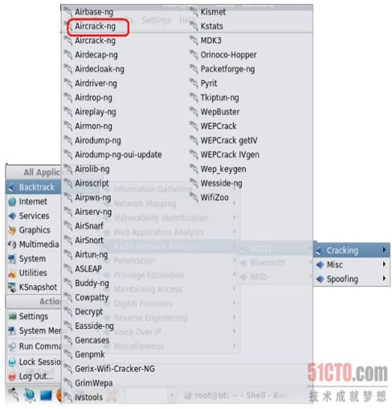

完全教程 Aircrack-ng破解WEP、WPA-PSK加密利器
目录
什么是Aircrack-ng2
使用Aircrack-ng破解WEP加密无线网络3
使用Aircrack-ng破解WPA-PSK加密无线网络18
使用Aircrack-ng破解WPA2-PSK加密无线网络25
使用Aircrack-ng进行无线破解的常见问题27
其实关于无线基础知识的内容还是挺多的，但是由于本书侧重于BT4自身工具使用的讲解，若是再仔细讲述这些外围的知识，这就好比讲述DNS工具时还要把DNS服务器的类型、工作原理及配置讲述一遍一样，哈哈，估计整本书的厚度就需要再翻一、两倍了。恩，关于无线网络基础知识建议大家可以参考我之前在黑手这里出版的《无线黑客傻瓜书》一书，会很有帮助。
恩，先说明一下，本章的内容适用于目前市面所有主流品牌无线路由器或AP如Linksys、Dlink、TPLink、BelKin等。涉及内容包括了WEP加密及WPA-PSK加密的无线网络的破解操作实战。
什么是Aircrack-ng
Aircrack-ng是一款用于破解无线802.11WEP及WPA-PSK加密的工具，该工具在2005年11月之前名字是Aircrack，在其2.41版本之后才改名为Aircrack-ng。
Aircrack-ng主要使用了两种攻击方式进行WEP破解：一种是FMS攻击，该攻击方式是以发现该WEP漏洞的研究人员名字（Scott Fluhrer、Itsik Mantin及Adi Shamir）所命名；另一种是KoreK攻击，经统计，该攻击方式的攻击效率要远高于FMS攻击。当然，最新的版本又集成了更多种类型的攻击方式。对于无线黑客而言，Aircrack-ng是一款必不可缺的无线攻击工具，可以说很大一部分无线攻击都依赖于它来完成；而对于无线安全人员而言，Aircrack-ng也是一款必备的无线安全检测工具，它可以帮助管理员进行无线网络密码的脆弱性检查及了解无线网络信号的分布情况，非常适合对企业进行无线安全审计时使用。
Aircrack-ng（注意大小写）是一个包含了多款工具的无线攻击审计套装，这里面很多工具在后面的内容中都会用到，具体见下表1为Aircrack-ng包含的组件具体列表。
表1
组件名称
描 述
aircrack-ng
主要用于WEP及WPA-PSK密码的恢复，只要airodump-ng收集到足够数量的数据包，aircrack-ng就可以自动检测数据包并判断是否可以破解
airmon-ng
用于改变无线网卡工作模式，以便其他工具的顺利使用
airodump-ng
用于捕获802.11数据报文，以便于aircrack-ng破解
aireplay-ng
在进行WEP及WPA-PSK密码恢复时，可以根据需要创建特殊的无线网络数据报文及流量
airserv-ng
可以将无线网卡连接至某一特定端口，为攻击时灵活调用做准备
airolib-ng
进行WPA Rainbow Table攻击时使用，用于建立特定数据库文件
airdecap-ng
用于解开处于加密状态的数据包
tools
其他用于辅助的工具，如airdriver-ng、packetforge-ng等
Aircrack-ng在 BackTrack4 R2下已经内置（下载BackTrack4 R2），具体调用方法如下图2所示：通过依次选择菜单中BacktrackRadio Network Analysis 80211CrackingAircrack-ng ，即可打开Aircrack-ng的主程序界面。也可以直接打开一个Shell，在里面直接输入aircrack-ng命令回车也能看到aircrack-ng的使用参数帮助。

图2
使用Aircrack-ng破解WEP加密无线网络
首先讲述破解采用WEP加密内容，启用此类型加密的无线网络往往已被列出严重不安全的网络环境之一。而Aircrack-ng正是破解此类加密的强力武器中的首选，关于使用Aircrack-ng套装破解WEP加密的具体步骤如下。
步骤1：载入无线网卡。
其实很多新人们老是在开始载入网卡的时候出现一些疑惑，所以我们就把这个基本的操作仔细看看。首先查看当前已经载入的网卡有哪些，输入命令如下：
ifconfig
回车后可以看到如下图3所示内容，我们可以看到这里面除了eth0之外，并没有无线网卡。
图3
确保已经正确插入USB或者PCMCIA型无线网卡，此时，为了查看无线网卡是否已经正确连接至系统，应输入：
ifconfig -a
参数解释：
-a显示主机所有网络接口的情况。和单纯的ifconfig命令不同，加上-a参数后可以看到所有连接至当前系统网络接口的适配器。
如下图4所示，我们可以看到和上图3相比，出现了名为wlan0的无线网卡，这说明无线网卡已经被BackTrack4 R2 Linux识别。
图4
既然已经识别出来了，那么接下来就可以激活无线网卡了。说明一下，无论是有线还是无线网络适配器，都需要激活，否则是无法使用滴。这步就相当于Windows下将本地连接启用一样，不启用的连接是无法使用的。
在上图4中可以看到，出现了名为wlan0的无线网卡，OK，下面输入：
ifconfig wlan0 up
参数解释：
up用于加载网卡的，这里我们来将已经插入到笔记本的无线网卡载入驱动。在载入完毕后，我们可以再次使用ifconfig进行确认。如下图5所示，此时，系统已经正确识别出无线网卡了。
图5
当然，通过输入iwconfig查看也是可以滴。这个命令专用于查看无线网卡，不像ifconfig那样查看所有适配器。
iwconfig
该命令在Linux下用于查看有无无线网卡以及当前无线网卡状态。如下图6所示。
图6
步骤2：激活无线网卡至monitor即监听模式。
对于很多小黑来说，应该都用过各式各样的嗅探工具来抓取密码之类的数据报文。那么，大家也都知道，用于嗅探的网卡是一定要处于monitor监听模式地。对于无线网络的嗅探也是一样。
在Linux下，我们使用Aircrack-ng套装里的airmon-ng工具来实现，具体命令如下：
airmon-ng start wlan0
参数解释：
start后跟无线网卡设备名称，此处参考前面ifconfig显示的无线网卡名称；
如下图7所示，我们可以看到无线网卡的芯片及驱动类型，在Chipset芯片类型上标明是Ralink 2573芯片，默认驱动为rt73usb，显示为monitor mode enabled on mon0，即已启动监听模式，监听模式下适配器名称变更为mon0。
图7
步骤3：探测无线网络，抓取无线数据包。
在激活无线网卡后，我们就可以开启无线数据包抓包工具了，这里我们使用Aircrack-ng套装里的airmon-ng工具来实现，具体命令如下：
不过在正式抓包之前，一般都是先进行预来探测，来获取当前无线网络概况，包括AP的SSID、MAC地址、工作频道、无线客户端MAC及数量等。只需打开一个Shell，输入具体命令如下：
airodump-ng mon0
参数解释：
mon0为之前已经载入并激活监听模式的无线网卡。如下图8所示。
图8
回车后，就能看到类似于下图9所示，这里我们就直接锁定目标是SSID为TP-LINK的AP，其BSSID（MAC）为00：19：E0：EB：33：66，工作频道为6，已连接的无线客户端MAC为00：1F：38：C9：71：71。
图9
既然我们看到了本次测试要攻击的目标，就是那个SSID名为TP-LINK的无线路由器，接下来输入命令如下：
airodump-ng --ivs w longas -c 6 wlan0
参数解释：
--ivs这里的设置是通过设置过滤，不再将所有无线数据保存，而只是保存可用于破解的IVS数据报文，这样可以有效地缩减保存的数据包大小；
-c这里我们设置目标AP的工作频道，通过刚才的观察，我们要进行攻击测试的无线路由器工作频道为6；
-w后跟要保存的文件名，这里w就是write写的意思，所以输入自己希望保持的文件名，如下图10所示我这里就写为longas。那么，小黑们一定要注意的是：这里我们虽然设置保存的文件名是longas，但是生成的文件却不是longase.ivs，而是longas-01.ivs。
图10
注意：这是因为airodump-ng这款工具为了方便后面破解时候的调用，所以对保存文件按顺序编了号，于是就多了-01这样的序号，以此类推，在进行第二次攻击时，若使用同样文件名longas保存的话，就会生成名为longas-02.ivs的文件，一定要注意哦，别到时候找不到又要怪我没写清楚：）
啊，估计有的朋友们看到这里，又会问在破解的时候可不可以将这些捕获的数据包一起使用呢，当然可以，届时只要在载入文件时使用longas*.cap即可，这里的星号指代所有前缀一致的文件。
在回车后，就可以看到如下图11所示的界面，这表示着无线数据包抓取的开始。
图11
步骤4：对目标AP使用ArpRequest注入攻击
若连接着该无线路由器/AP的无线客户端正在进行大流量的交互，比如使用迅雷、电骡进行大文件下载等，则可以依靠单纯的抓包就可以破解出WEP密码。但是无线黑客们觉得这样的等待有时候过于漫长，于是就采用了一种称之为ARP Request的方式来读取ARP请求报文，并伪造报文再次重发出去，以便刺激AP产生更多的数据包，从而加快破解过程，这种方法就称之为ArpRequest注入攻击。具体输入命令如下：
aireplay-ng -3 -b AP的mac -h 客户端的mac mon0
参数解释：
-3指采用ARPRequesr注入攻击模式；
-b后跟AP的MAC地址，这里就是前面我们探测到的SSID为TPLINK的AP的MAC；
-h后跟客户端的MAC地址，也就是我们前面探测到的有效无线客户端的MAC；
最后跟上无线网卡的名称，这里就是mon0啦。
回车后将会看到如下图12所示的读取无线数据报文，从中获取ARP报文的情况出现。
图12
在等待片刻之后，一旦成功截获到ARP请求报文，我们将会看到如下图13所示的大量ARP报文快速交互的情况出现。
图13
此时回到airodump-ng的界面查看，在下图14中我们可以看到，作为TP-LINK的packets栏的数字在飞速递增。
图14
步骤5：打开aircrack-ng，开始破解WEP。
在抓取的无线数据报文达到了一定数量后，一般都是指IVs值达到2万以上时，就可以开始破解，若不能成功就等待数据报文的继续抓取然后多试几次。注意，此处不需要将进行注入攻击的Shell关闭，而是另外开一个Shell进行同步破解。输入命令如下：
aircrack-ng 捕获的ivs文件
关于IVs的值数量，我们可以从如下图15所示的界面中看到，当前已经接受到的IVs已经达到了1万5千以上，aircrack-ng已经尝试了41万个组合。
图15
那么经过很短时间的破解后，就可以看到如下图16中出现KEY FOUND的提示，紧跟后面的是16进制形式，再后面的ASCII部分就是密码啦，此时便可以使用该密码来连接目标AP了。 一般来说，破解64位的WEP至少需要1万IVs以上，但若是要确保破解的成功，应捕获尽可能多的IVs数据。比如下图16所示的高强度复杂密码破解成功依赖于8万多捕获的IVs。
图16
注意：由于是对指定无线频道的数据包捕获，所以有的时候大家会看到如下图17中一样的情景，在破解的时候出现了多达4个AP的数据报文，这是由于这些AP都工作在一个频道所致，很常见的。此时，选择我们的目标，即标为1的、SSID位dlink的那个数据包即可，输入1，回车后即可开始破解。
图17
看到这里，可能有的朋友会说，这些都是弱密码（就是过于简单的密码），所以才这么容易破解，大不了我用更复杂点的密码总可以了吧，比如#87G之类的，即使是采用更为复杂的密码，这样真的就安全了吗？嘿嘿，那就看看下图18中显示的密码吧：）
图18
正如你所看到的，在上图18中白框处破解出来的密码已经是足够复杂的密码了吧？我们放大看一看，如下图19所示，这样采用了大写字母、小写字母、数字和特殊符号的长达13位的WEP密码，在获得了足够多的IVs后，破解出来只花费了约4秒钟！
图19
现在，你还认为自己的无线网络安全么？哈，这还只是个开始，我们接着往下看。
补充一下：
若希望捕获数据包时，能够不但是捕获包括IVS的内容，而是捕获所有的无线数据包，也可以在事后分析，那么可以使用如下命令：
airodump-ng w longas -c 6 wlan0
就是说，不再--ivs过滤，而是全部捕获，这样的话，捕获的数据包将不再是longas-01.ivs，而是longas-01.cap，请大家注意。命令如下图20所示。
图20
同样地，在破解的时候，对象也变成了longas-*.cap。命令如下：
aircrack-ng 捕获的cap文件
回车后如下图21所示，一样破解出了密码。
图21
可能有的朋友又要问，ivs和cap直接的区别到底在哪儿呢？其实很简单，若只是为了破解的话，建议保存为ivs，优点是生成文件小且效率高。若是为了破解后同时来对捕获的无线数据包分析的话，就选为cap，这样就能及时作出分析，比如内网IP地址、密码等，当然，缺点就是文件会比较大，若是在一个复杂无线网络环境的话，短短20分钟，也有可能使得捕获的数据包大小超过200MB。
如下图22所示，我们使用du命令来比较上面破解所捕获的文件大小。可以看到，longas-01.ivs只有3088KB，也就算是3MB，但是longas-02.cap则达到了22728KB，达到了20MB左右！！
图22
使用Aircrack-ng破解WPA-PSK加密无线网络
结合上小节的内容，下面继续是以BackTrack4 R2 Linux为环境，讲述破解WPA-PSK加密无线网络的具体步骤，详细如下。
步骤1：升级Aircrack-ng。
前面在第一章1.3节我们已经讲述了升级Aircrack-ng套装的详细步骤，这里也是一样，若条件允许，应将Aircrack-ng升级到最新的Aircrack-ng 1.1版。由于前面我已经给出了详细的步骤，这里就不再重复。
除此之外，为了更好地识别出无线网络设备及环境，最好对airodump-ng的OUI库进行升级，先进入到Aircrack-ng的安装目录下，然后输入命令如下：
airodump-ng-oui-update
回车后，就能看到如下图23所示的开始下载的提示，稍等一会儿，这个时间会比较长，恩，建议预先升级，不要临阵磨枪。
图23
步骤2：载入并激活无线网卡至monitor即监听模式。
在进入BackTrack4 R2系统后，载入无线网卡的顺序及命令部分，依次输入下述命令：
startx 进入到图形界面
ifconfig a 查看无线网卡状态
ifconfig wlan0 up 载入无线网卡驱动
airmon-ng start wlan0 激活网卡到monitor模式
如下图24所示，我们可以看到无线网卡的芯片及驱动类型，在Chipset芯片类型上标明是Ralink 2573芯片，默认驱动为rt73usb，显示为monitor mode enabled on mon0，即已启动监听模式，监听模式下适配器名称变更为mon0。
图24
步骤3：探测无线网络，抓取无线数据包。
在激活无线网卡后，我们就可以开启无线数据包抓包工具了，这里我们使用Aircrack-ng套装里的airodump-ng工具来实现，具体命令如下：
airodump-ng -c 6 w longas mon0
参数解释：
-c这里我们设置目标AP的工作频道，通过观察，我们要进行攻击测试的无线路由器工作频道为6；
-w后跟要保存的文件名，这里w就是write写的意思，所以输入自己希望保持的文件名，这里我就写为longas。那么，小黑们一定要注意的是：这里我们虽然设置保存的文件名是longas，但是生成的文件却不是longas.cap，而是longas-01.cap。
mon0为之前已经载入并激活监听模式的无线网卡。如下图25所示。
在回车后，就可以看到如下图25所示的界面，这表示着无线数据包抓取的开始。接下来保持这个窗口不动，注意，不要把它关闭了。另外打开一个Shell。进行后面的内容。
图25
步骤4：进行Deauth攻击加速破解过程。
和破解WEP时不同，这里为了获得破解所需的WPA-PSK握手验证的整个完整数据包，无线黑客们将会发送一种称之为Deauth的数据包来将已经连接至无线路由器的合法无线客户端强制断开，此时，客户端就会自动重新连接无线路由器，黑客们也就有机会捕获到包含WPA-PSK握手验证的完整数据包了。此处具体输入命令如下：
aireplay-ng -0 1 a AP的mac -c 客户端的mac wlan0
参数解释：
-0采用deauth攻击模式，后面跟上攻击次数，这里我设置为1，大家可以根据实际情况设置为10不等；
-a后跟AP的MAC地址；
-c后跟客户端的MAC地址；
回车后将会看到如下图26所示的deauth报文发送的显示。
图26
此时回到airodump-ng的界面查看，在下图27中我们可以看到在右上角出现了WPA handshake的提示，这表示获得到了包含WPA-PSK密码的4此握手数据报文，至于后面是目标AP的MAC，这里的AP指的就是要破解的无线路由器。
图27
若我们没有在airodump-ng工作的界面上看到上面的提示，那么可以增加Deauth的发送数量，再一次对目标AP进行攻击。比如将-0参数后的数值改为10。如下图28所示。
图28
步骤5：开始破解WPA-PSK。
在成功获取到无线WPA-PSK验证数据报文后，就可以开始破解，输入命令如下：
aircrack-ng -w dic 捕获的cap文件
参数解释：
-w后跟预先制作的字典，这里是BT4下默认携带的字典。
在回车后，若捕获数据中包含了多个无线网络的数据，也就是能看到多个SSID出现的情况。这就意味着其它AP的无线数据皆因为工作在同一频道而被同时截获到，由于数量很少所以对于破解来说没有意义。此处输入正确的选项即对应目标AP的MAC值，回车后即可开始破解。如下图29所示为命令输入情况。
图29
由下图30可以看到，在双核T7100的主频+4GB内存下破解速度达到近450k/s，即每秒钟尝试450个密码。
图30
经过不到1分多钟的等待，我们成功破解出了密码。如下图31所示，在KEY FOUND提示的右侧，可以看到密码已被破解出。密码明文为longaslast，破解速度约为450 key/s。若是能换成4核CPU的话，还能更快一些。
图31
使用Aircrack-ng破解WPA2-PSK加密无线网络
对于启用WPA2-PSK加密的无线网络，其攻击和破解步骤及工具是完全一样的，不同的是，在使用airodump-ng进行无线探测的界面上，会提示为WPA CCMP PSK。如下图32所示。
图32
当我们使用aireplay-ng进行deauth攻击后，同样可以获得到WPA握手数据包及提示，如下图33所示。
图33
同样地，使用aircrack-ng进行破解，命令如下：
aircrack-ng -w dic 捕获的cap文件
参数解释：
-w后跟预先制作的字典文件
经过1分多钟的等待，可以在下图34中看到提示：KEY FOUND！后面即为WPA2-PSK连接密码19890305。
图34
现在，看明白了吧？破解WPA-PSK对硬件要求及字典要求很高，所以只要你多准备一些常用的字典比如生日、8位数字等，这样破解的时候也会增大破解的成功率。
使用Aircrack-ng进行无线破解的常见问题
恩，下面使一些初学无线安全的小黑们在攻击中可能遇到的问题，列举出来方便有朋友对号入座：
1．我的无线网卡为何无法识别？
答：BT4支持的无线网卡有很多，比如对采用Atheros、Prism2和Ralink芯片的无线网卡，无论是PCMCIA还是PCI，亦或是USB的，支持性还是很高的。要注意BT4也不是所有符合芯片要求的无线网卡都支持的，有些同型号的但是硬件固件版本不同就不可以，具体可以参考Aircrack-ng官方网站的说明。
2．为什么我输入的命令老是提示错误？
答：呃没什么说的，兄弟，注意大小写和路径吧。
3．为什么使用airodump-ng进行的的ArpRequest注入攻击包时，速度很缓慢？？
答：原因主要有两个：
（1．是可能该无线网卡对这些无线工具的支持性不好，比如很多笔记本自带的无线网卡支持性就不好；
（2．是若只是在本地搭建的实验环境的话，会因为客户端与AP交互过少，而出现ARP注入攻击缓慢的情况，但若是个客户端很多的环境，比如商业繁华区或者大学科技楼，很多用户在使用无线网络进行上网，则攻击效果会很显著，最短5分钟即可破解WEP。
4．为什么使用aireplay-ng发送的Deauth攻击包后没有获取到WPA握手包？
答：原因主要有两个：
（1．是可能该无线网卡对这些无线工具的支持性不好，需要额外的驱动支持；
（2．是无线接入点自身问题，有的AP在遭受攻击后会短时间内失去响应，需重起或等待片刻才可恢复正常工作状态。
5．为什么我找不到捕获的cap文件？
答：其实这是件很抓狂的问题，虽然在前面使用airodump-ng时提到文件保存的时候，我已经说明默认会保存为文件名-01.cap这样的方式，但是依旧会有很多由于过于兴奋导致眼神不济的小黑们抱怨找不到破解文件。
好吧，我再举个例子，比如最初捕获时我们命名为longas或者longas.cap，但在aircrack-ng攻击载入时使用ls命令察看，就会发现该文件已变成了longas-01.cap，此时，将要破解的文件改为此即可进行破解。若捕获文件较多，需要将其合并起来破解的话，就是用类似于longas*.cap这样的名字来指代全部的cap文件。这里*指代-01、-02等文件。
6．Linux下捕获的WPA握手文件是否可以放到Windows下破解？
答：这个是可以的，不但可以导入windows下shell版本的aircrack-ng破解，还可以导入Cain等工具进行破解。关于Windows下的破解我已在《无线黑客傻瓜书》里做了详细的阐述，这里就不讲述和BT4无关的内容了。
《BT4 Linux 黑客手册》国内第一本关于BackTrack3/4/4R1/4R2/5下内置工具讲解书籍，适用于各类BT4狂热分子、BT4英文能力不强者、BT4初哥、BT4宅男宅女、BT4深度学习人士、BT5过渡期待者、BT3迷恋者、BT4无线hacking爱好者、鄙视Windows者及......（此处略去1千字），聚众奋力编写6个月，终于粉墨登场！
全书共15章，全书稿页数近600页，涉及工具近100个，攻防操作案例60个，从有线到无线、从扫描到入侵、从嗅探到PJ、从逆向到取证，全面协助小黑们从零开始一步步学习BT4下各类工具的使用及综合运用。